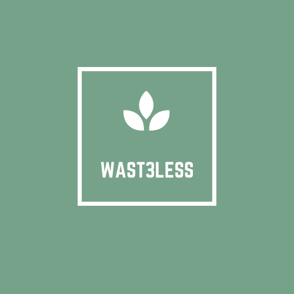

<html>
    <head>
        <title>WAST3LESS</title>
    <link href="https://fonts.googleapis.com/css?family=Yeon+Sung&display=swap" rel="stylesheet"><meta name="viewport" content="width=device-width, initial-scale=1">
    
    <link rel="stylesheet" href="https://maxcdn.bootstrapcdn.com/bootstrap/3.4.0/css/bootstrap.min.css">
    <script src="https://ajax.googleapis.com/ajax/libs/jquery/3.4.1/jquery.min.js"></script>
    <script src="https://maxcdn.bootstrapcdn.com/bootstrap/3.4.0/js/bootstrap.min.js"></script>

    <link rel="preconnect" href="https://fonts.gstatic.com">
    <link href="https://fonts.googleapis.com/css2?family=Big+Shoulders+Display:wght@600&display=swap" rel="stylesheet">
    
    <link rel="stylesheet" type="text/css" href="style.css">
    <script src="main.js"></script>
    </head>
</html>
<body>
    <center>

        <nav class="navbar-inverse index_nav_bar">
            <div class="navbar-header">
                <button type="button" class="navbar-toggle" data-toggle="collapse" data-target="#myNavbar">
                    <span class="icon-bar"></span>
                    <span class="icon-bar"></span>
                    <span class="icon-bar"></span>
                </button>
                <a class="navbar-brand" href="#">WAST3LESS</a>
            </div>
            <div class="collapse navbar-collapse" id="myNavbar">
            </div>
        </nav>

        <span id="header">
                
        </span>

    <h3 id="abt_para">
        In the United States approximately one pound of food is wasted per person each day.
        Using WAST3LESS can prevent enormous amounts of food from going to waste.
        A food provider is a person who has extra food that can be donated.
        Anyone with leftover food can become a food provider and contact volunteers to pick up food within their area! 
        Leftovers after a party or even extra food from a restraunt, can be delivered. 
        The food is delivered to food consumers such as soup kitchens or charities and given to people in need of a meal. 
    </h3>

    <h3 id="h3">
        Keep food from going to waste and join WAST3LESS by clicking one of the buttons below!
    </h5>

    <div id="button_1">
        <button class="btn btn-success" id="btn1" onclick="btn1_click()">Food Provider</button>
    </div>
    <div id="button_2">
        <button class="btn btn-info" id="btn2" onclick="btn2_click()">Volunteer</button>
    </div>
    <div id="button_3">
        <button class="btn btn-primary" id="btn3" onclick="btn3_click()">Food Consumer</button>
    </div>
</center>
</body>